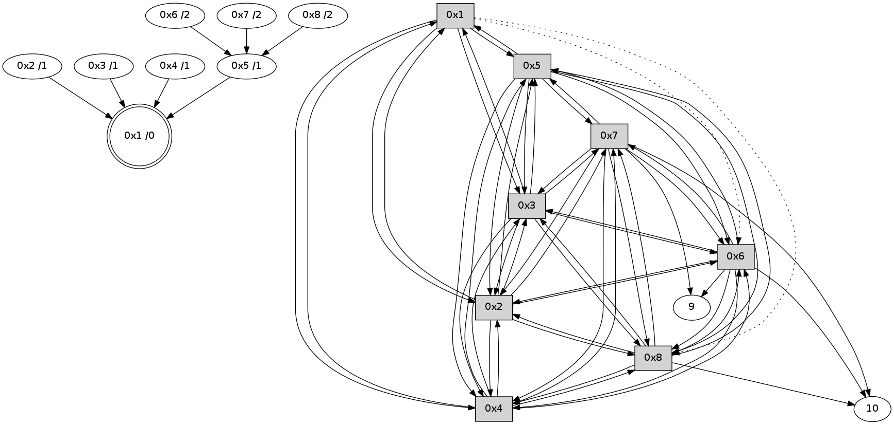

>> << IDX [start] -100 -25 -5 +0 +5 +25 +100 [325.005589962]
 Previous packets
----------------------------------------------------------------------
320.106036 beacon01(11f6) #0 coord=01,02,03,04,05,06,07,08,0a,09 cycle=688.0ms assoc
-- color-indic=0 64 a0 ca
320.116199 beacon02(11f6) #0 coord=01,02,03,04,05,06,07,08,0a,09 cycle=688.0ms assoc 64 33 fb
320.126171 beacon03(11f6) #0 coord=01,02,03,04,05,06,07,08,0a,09 cycle=688.0ms assoc 64 49 b6
320.136171 beacon04(11f6) #0 coord=01,02,03,04,05,06,07,08,0a,09 cycle=688.0ms assoc 64 3e 5c
320.146171 beacon05(11f6) #0 coord=01,02,03,04,05,06,07,08,0a,09 cycle=688.0ms assoc 64 44 11
320.156172 beacon06(11f6) #0 coord=01,02,03,04,05,06,07,08,0a,09 cycle=688.0ms assoc 64 ca c6
320.166173 beacon07(11f6) #0 coord=01,02,03,04,05,06,07,08,0a,09 cycle=688.0ms assoc 64 b0 8b
320.176177 beacon08(11f6) #0 coord=01,02,03,04,05,06,07,08,0a,09 cycle=688.0ms assoc 64 35 1a
320.215022 [Hello(8): seq=150 sym=2,7,5,6,3,4,10 sysInfo= stat=2:14,0,0,0/7:7,0,0,0/5:5,0,0,0/6:1,0,0,0/3:3,0,0,0/4:14,0,0,0/10:9,0,0,0]
320.217225 [Hello(6): seq=150 sym=10,7,5,3,8,4,2,9 sysInfo= stat=10:1,0,0,0/7:6,0,0,0/5:9,0,0,0/3:6,0,0,0/8:2,0,0,0/4:12,0,0,0/2:0,0,0,0/9:13,0,0,0]
320.222047 [Hello(7): seq=150 sym=10,5,6,8,3,2,4,9 sysInfo= stat=10:0,0,0,0/5:6,0,0,0/6:1,0,0,0/8:5,0,0,0/3:12,0,0,0/2:14,0,0,0/4:12,0,0,0/9:4,0,0,0]
320.231750 [Hello(4): seq=150 sym=1,2,5,6,3,8,7 sysInfo= stat=1:5,0,0,0/2:13,0,0,0/5:0,0,0,0/6:9,0,0,0/3:1,0,0,0/8:1,0,0,0/7:6,0,0,0]
320.281648 [Hello(5): seq=150 sym=1,2,7,6,3,8,4 sysInfo= stat=1:6,0,0,0/2:11,0,0,0/7:4,0,0,0/6:11,0,0,0/3:15,0,0,0/8:2,0,0,0/4:2,0,0,0]
320.317055 [Hello(2): seq=150 sym=1,7,5,3,8,4,6 sysInfo= stat=1:5,0,0,0/7:0,0,0,0/5:15,0,0,0/3:14,0,0,0/8:2,0,0,0/4:15,0,0,0/6:3,0,0,0]
320.354432 [Hello(3): seq=150 sym=1,2,7,5,6,8,4 mpr= sysInfo= stat=1:6,0,0,0/2:13,0,0,0/7:1,0,0,0/5:15,0,0,0/6:9,0,0,0/8:2,0,0,0/4:3,0,0,0]
----------------------------------------------------------------------
320.894173 beacon01(11f6) #0 coord=01,02,03,04,05,06,07,08,0a,09 cycle=688.0ms assoc
-- color-indic=0 64 1c cf
320.904342 beacon02(11f6) #0 coord=01,02,03,04,05,06,07,08,0a,09 cycle=688.0ms assoc 64 8f fe
320.914309 beacon03(11f6) #0 coord=01,02,03,04,05,06,07,08,0a,09 cycle=688.0ms assoc 64 f5 b3
320.924308 beacon04(11f6) #0 coord=01,02,03,04,05,06,07,08,0a,09 cycle=688.0ms assoc 64 82 59
320.934309 beacon05(11f6) #0 coord=01,02,03,04,05,06,07,08,0a,09 cycle=688.0ms assoc 64 f8 14
320.944309 beacon06(11f6) #0 coord=01,02,03,04,05,06,07,08,0a,09 cycle=688.0ms assoc 64 76 c3
320.954309 beacon07(11f6) #0 coord=01,02,03,04,05,06,07,08,0a,09 cycle=688.0ms assoc 64 0c 8e
320.964312 beacon08(11f6) #0 coord=01,02,03,04,05,06,07,08,0a,09 cycle=688.0ms assoc 64 89 1f
321.086632 [Hello(1): seq=151 sym=5,3,2,4 asym=8,6 sysInfo= stat=5:15,0,0,0/3:3,0,0,0/2:12,0,0,0/4:1,0,0,0/8:4,0,0,0/6:14,0,0,0]
321.089473 [STC(1) #0.1 to-color d=0]
321.114234 [STC(5)->1 #0.1 to-color d=1]
321.127337 [STC(8)->5-.->1 #0.1 to-color d=2]
321.142657 [STC(3)->1 #0.1 to-color d=1]
----------------------------------------------------------------------
321.682309 beacon01(11f6) #0 coord=01,02,03,04,05,06,07,08,0a,09 cycle=688.0ms assoc
-- color-indic=0 64 bb bf
321.692458 beacon02(11f6) #0 coord=01,02,03,04,05,06,07,08,0a,09 cycle=688.0ms assoc 64 28 8e
321.702445 beacon03(11f6) #0 coord=01,02,03,04,05,06,07,08,0a,09 cycle=688.0ms assoc 64 52 c3
321.712444 beacon04(11f6) #0 coord=01,02,03,04,05,06,07,08,0a,09 cycle=688.0ms assoc 64 25 29
321.722445 beacon05(11f6) #0 coord=01,02,03,04,05,06,07,08,0a,09 cycle=688.0ms assoc 64 5f 64
321.742446 beacon07(11f6) #0 coord=01,02,03,04,05,06,07,08,0a,09 cycle=688.0ms assoc 64 ab fe
321.752449 beacon08(11f6) #0 coord=01,02,03,04,05,06,07,08,0a,09 cycle=688.0ms assoc 64 2e 6f
321.802020 [Hello(3): seq=151 sym=1,2,7,5,6,8,4 sysInfo= stat=1:7,0,1,0/2:13,0,0,0/7:1,0,0,0/5:15,0,1,0/6:9,0,0,0/8:2,0,1,0/4:3,0,0,0]
321.841970 [Hello(5): seq=151 sym=1,2,7,6,3,8,4 sysInfo= stat=1:7,0,1,0/2:12,0,0,0/7:4,0,0,0/6:11,0,0,0/3:1,0,1,0/8:2,0,1,0/4:2,0,0,0]
321.852682 [Hello(8): seq=151 sym=2,7,5,6,3,4,10 sysInfo= stat=2:15,0,0,0/7:8,0,0,0/5:7,0,1,0/6:2,0,0,0/3:5,0,1,0/4:15,0,0,0/10:10,0,0,0]
321.878651 [Hello(6): seq=151 sym=10,7,5,3,8,4,2,9 sysInfo= stat=10:2,0,0,0/7:7,0,0,0/5:11,0,1,0/3:8,0,1,0/8:3,0,1,0/4:13,0,0,0/2:1,0,0,0/9:14,0,0,0]
321.883600 [STC(6)->5-.->1 #0.1 to-color d=2]
321.908178 [Hello(2): seq=151 sym=1,7,5,3,8,4,6 sysInfo= stat=1:6,0,1,0/7:0,0,0,0/5:0,0,1,0/3:0,0,1,0/8:3,0,1,0/4:15,0,0,0/6:4,0,0,0]
321.910772 [STC(2)->1 #0.1 to-color d=1]
321.918958 [Hello(4): seq=151 sym=1,2,5,6,3,8,7 sysInfo= stat=1:6,0,1,0/2:15,0,1,0/5:2,0,1,0/6:10,0,1,0/3:3,0,1,0/8:2,0,1,0/7:6,0,0,0]
321.923110 [STC(4)->1 #0.1 to-color d=1]
321.928719 [STC(7)->5-.->1 #0.1 to-color d=2]
----------------------------------------------------------------------
322.470446 beacon01(11f6) #0 coord=01,02,03,04,05,06,07,08,0a,09 cycle=688.0ms assoc
-- color-indic=0 64 07 ba
322.480601 beacon02(11f6) #0 coord=01,02,03,04,05,06,07,08,0a,09 cycle=688.0ms assoc 64 94 8b
322.490581 beacon03(11f6) #0 coord=01,02,03,04,05,06,07,08,0a,09 cycle=688.0ms assoc 64 ee c6
322.500581 beacon04(11f6) #0 coord=01,02,03,04,05,06,07,08,0a,09 cycle=688.0ms assoc 64 99 2c
322.510582 beacon05(11f6) #0 coord=01,02,03,04,05,06,07,08,0a,09 cycle=688.0ms assoc 64 e3 61
322.520582 beacon06(11f6) #0 coord=01,02,03,04,05,06,07,08,0a,09 cycle=688.0ms assoc 64 6d b6
322.530581 beacon07(11f6) #0 coord=01,02,03,04,05,06,07,08,0a,09 cycle=688.0ms assoc 64 17 fb
322.540586 beacon08(11f6) #0 coord=01,02,03,04,05,06,07,08,0a,09 cycle=688.0ms assoc 64 92 6a
322.632357 [Hello(1): seq=152 sym=5,3,2,4 asym=8,6 sysInfo= stat=5:0,0,1,0/3:4,0,1,0/2:13,0,1,0/4:2,0,1,0/8:5,0,1,0/6:15,0,0,0]
----------------------------------------------------------------------
323.258583 beacon01(11f6) #0 coord=01,02,03,04,05,06,07,08,0a,09 cycle=688.0ms assoc
-- color-indic=0 64 c3 b4
323.268740 beacon02(11f6) #0 coord=01,02,03,04,05,06,07,08,0a,09 cycle=688.0ms assoc 64 50 85
323.278719 beacon03(11f6) #0 coord=01,02,03,04,05,06,07,08,0a,09 cycle=688.0ms assoc 64 2a c8
323.288718 beacon04(11f6) #0 coord=01,02,03,04,05,06,07,08,0a,09 cycle=688.0ms assoc 64 5d 22
323.298718 beacon05(11f6) #0 coord=01,02,03,04,05,06,07,08,0a,09 cycle=688.0ms assoc 64 27 6f
323.308718 beacon06(11f6) #0 coord=01,02,03,04,05,06,07,08,0a,09 cycle=688.0ms assoc 64 a9 b8
323.318719 beacon07(11f6) #0 coord=01,02,03,04,05,06,07,08,0a,09 cycle=688.0ms assoc 64 d3 f5
323.328723 beacon08(11f6) #0 coord=01,02,03,04,05,06,07,08,0a,09 cycle=688.0ms assoc 64 56 64
323.366289 [Hello(5): seq=152 sym=1,2,7,6,3,8,4 sysInfo= stat=1:8,0,1,0/2:13,0,1,0/7:4,0,1,0/6:12,0,0,0/3:1,0,1,0/8:3,0,1,0/4:3,0,1,0]
323.376571 [Hello(7): seq=152 sym=10,5,6,8,3,2,4,9 sysInfo= stat=10:1,0,1,0/5:9,0,1,0/6:3,0,0,0/8:6,0,1,0/3:14,0,1,0/2:0,0,1,0/4:13,0,0,0/9:5,0,1,0]
323.383092 [Hello(2): seq=152 sym=1,7,5,3,8,4,6 sysInfo= stat=1:7,0,1,0/7:1,0,1,0/5:1,0,1,0/3:0,0,1,0/8:3,0,1,0/4:0,0,1,0/6:4,0,0,0]
323.389185 [Hello(4): seq=152 sym=1,2,5,6,3,8,7 sysInfo= stat=1:7,0,1,0/2:0,0,1,0/5:3,0,1,0/6:10,0,1,0/3:3,0,1,0/8:2,0,1,0/7:7,0,1,0]
323.447903 [Hello(8): seq=152 sym=2,7,5,6,3,4,10 sysInfo= stat=2:1,0,1,0/7:9,0,1,0/5:8,0,1,0/6:3,0,0,0/3:5,0,1,0/4:1,0,0,0/10:11,0,1,0]
323.467253 [Hello(6): seq=152 sym=10,7,5,3,8,4,2,9 sysInfo= stat=10:3,0,1,0/7:8,0,1,0/5:12,0,1,0/3:8,0,1,0/8:4,0,1,0/4:15,0,0,0/2:3,0,1,0/9:14,0,1,0]
323.499892 [Hello(3): seq=152 sym=1,2,7,5,6,8,4 sysInfo= stat=1:8,0,1,0/2:15,0,1,0/7:2,0,1,0/5:1,0,1,0/6:11,0,1,0/8:4,0,1,0/4:5,0,1,0]
----------------------------------------------------------------------
324.046719 beacon01(11f6) #0 coord=01,02,03,04,05,06,07,08,0a,09 cycle=688.0ms assoc
-- color-indic=0 64 7f b1
324.056891 beacon02(11f6) #0 coord=01,02,03,04,05,06,07,08,0a,09 cycle=688.0ms assoc 64 ec 80
324.066854 beacon03(11f6) #0 coord=01,02,03,04,05,06,07,08,0a,09 cycle=688.0ms assoc 64 96 cd
324.076854 beacon04(11f6) #0 coord=01,02,03,04,05,06,07,08,0a,09 cycle=688.0ms assoc 64 e1 27
324.086855 beacon05(11f6) #0 coord=01,02,03,04,05,06,07,08,0a,09 cycle=688.0ms assoc 64 9b 6a
324.096853 beacon06(11f6) #0 coord=01,02,03,04,05,06,07,08,0a,09 cycle=688.0ms assoc 64 15 bd
324.106855 beacon07(11f6) #0 coord=01,02,03,04,05,06,07,08,0a,09 cycle=688.0ms assoc 64 6f f0
324.116859 beacon08(11f6) #0 coord=01,02,03,04,05,06,07,08,0a,09 cycle=688.0ms assoc 64 ea 61
324.201927 [Hello(1): seq=153 sym=5,3,2,4 asym=8,6 sysInfo= stat=5:1,0,1,0/3:4,0,1,0/2:14,0,1,0/4:3,0,1,0/8:6,0,1,0/6:0,0,0,0]
----------------------------------------------------------------------
324.834856 beacon01(11f6) #0 coord=01,02,03,04,05,06,07,08,0a,09 cycle=688.0ms assoc
-- color-indic=0 64 4b a9
324.845038 beacon02(11f6) #0 coord=01,02,03,04,05,06,07,08,0a,09 cycle=688.0ms assoc 64 d8 98
324.854990 beacon03(11f6) #0 coord=01,02,03,04,05,06,07,08,0a,09 cycle=688.0ms assoc 64 a2 d5
324.864991 beacon04(11f6) #0 coord=01,02,03,04,05,06,07,08,0a,09 cycle=688.0ms assoc 64 d5 3f
324.874991 beacon05(11f6) #0 coord=01,02,03,04,05,06,07,08,0a,09 cycle=688.0ms assoc 64 af 72
324.884991 beacon06(11f6) #0 coord=01,02,03,04,05,06,07,08,0a,09 cycle=688.0ms assoc 64 21 a5
324.894991 beacon07(11f6) #0 coord=01,02,03,04,05,06,07,08,0a,09 cycle=688.0ms assoc 64 5b e8
324.904995 beacon08(11f6) #0 coord=01,02,03,04,05,06,07,08,0a,09 cycle=688.0ms assoc 64 de 79
324.964561 [Hello(7): seq=153 sym=10,5,6,8,3,2,4,9 sysInfo= stat=10:3,0,1,0/5:9,0,1,0/6:4,0,0,0/8:7,0,1,0/3:14,0,1,0/2:1,0,1,0/4:14,0,0,0/9:5,0,1,0]
324.967150 [Hello(4): seq=153 sym=1,2,5,6,3,8,7 sysInfo= stat=1:8,0,1,0/2:0,0,1,0/5:3,0,1,0/6:11,0,1,0/3:4,0,1,0/8:3,0,1,0/7:7,0,1,0]
324.990558 [Hello(5): seq=153 sym=1,2,7,6,3,8,4 sysInfo= stat=1:9,0,1,0/2:14,0,1,0/7:6,0,1,0/6:13,0,0,0/3:2,0,1,0/8:4,0,1,0/4:5,0,1,0]
324.992967 [Hello(6): seq=153 sym=10,7,5,3,8,4,2,9 sysInfo= stat=10:4,0,1,0/7:9,0,1,0/5:12,0,1,0/3:8,0,1,0/8:4,0,1,0/4:0,0,0,0/2:3,0,1,0/9:14,0,1,0]